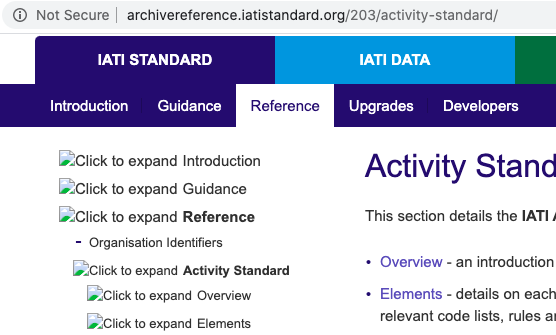

Thanks, @alex_miller, it does seem faster today.
Just thought we should mention the download time as it was a noticeable change.
We can also confirm that all codelist API redirects are working from our end and will use the new endpoints.

Thanks, @alex_miller, it does seem faster today.
Just thought we should mention the download time as it was a noticeable change.
We can also confirm that all codelist API redirects are working from our end and will use the new endpoints.
Thanks for clarifying, @amys.
It would be of use from the perspective of historical documentation and official source.
A generic ‘version 1’ link would be appreciated, thank you.
However, the changelogs for version 1.5 and below are currently showing up as error pages. Looks like the url is missing ‘/v1-upgrades/’.
Thanks Shi, I’ll get these working.
I’ve raised an issue to get a generic version 1 link. This will require a little longer as it needs a template change.
Committing to support these new routes will serve to increase technical debt. It might be preferable to unofficially support this (i.e. redirect there), but officially recommend the URLs listed on the codelist API page. Just a thought.
Cheers @andylolz,
I’m not sure why certain page depths were not appending the trailing slash (/203/codelists would append, but /203/codelists/sector wouldn’t).
Added some of the source from the Django Common middleware into our custom middleware to try and ensure trailing slashes are always appended for non-file URLs. It should all be fixed now.
LGTM! Thanks for fixing.
I see the dropdown arrows on the archive reference site are all broken:

This is a perennial bug – I sent a fix for it 2 years ago. I’ve just re-sent it:
@IATI-techteam - I just tried to download something from this page but the Rwanda link to the pdf was broken: https://iatistandard.org/en/news/spotlight-on-iati-data-use-rwanda/
hi @amys any update on the plans for this fix - or can you point me to another source for these files?
Hi Matt, I’ve redone the redirect, it should now take you to the right page and stay what way. Please could you check?
Thanks - the links that formerly went directly to the pdf’s now go to a page where the pdf’s can be downloaded - I am not sure I understand what is happening here - (could the links for each file not just go to the pdf files themselves?) but great that access has been restored in general 
Hi Matt, I’ve redone the links so now they you can directly download the file.
Not sure what happened with the links. There was previously a broken link taking the user to the one data use research page.